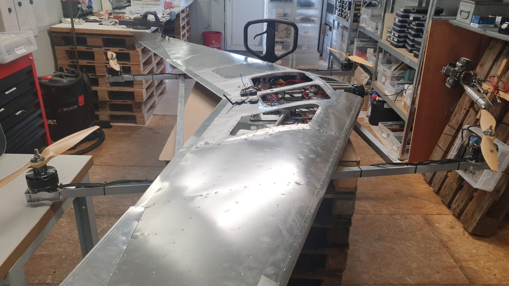

Flying-wing VTOL stability
Resolve unstable flight behaviour, oscillation and vibration on a 4+1 flying-wing QuadPlane.
View project →Engineering portfolio
UAV & Avionics Systems Engineer
I design, integrate and troubleshoot uncrewed systems, from aircraft and ground robots to surface vessels. My work connects avionics, embedded electronics and practical engineering design.

Electronics integration and technical coordination at FARASHA SYSTEMS, alongside independent UAV configuration and diagnostics. My project library also includes fixed-wing design development, quadcopter fabrication preparation and surface-vessel system studies.
A selection of aircraft, robotics and avionics work. Each project identifies my contribution, the delivered work and the validation reached.

Resolve unstable flight behaviour, oscillation and vibration on a 4+1 flying-wing QuadPlane.
View project →
Connect navigation, telemetry and payload interfaces for fixed-wing missions.
View project →
Investigate position drift, altitude/yaw tracking and configuration concerns using supplied test logs.
View project →
Investigate unstable response and establish repeatable configuration checks.
View project →Connect an autopilot to dual motor controllers and explore UAV-to-rover communication.
View project →Integrate propulsion and power interfaces on a 4 m twin-waterjet USV.
View project →Edited public excerpts from client reports, showing the analysis behind the configuration and diagnostic work.
Hassan II University of Casablanca · Bac+5
Université Sidi Mohamed Ben Abdellah
FARASHA SYSTEMS
FARASHA SYSTEMS
Upwork, Fiverr and direct clients
Rebuilt and reviewed Pixhawk 6C / ArduPlane setup, motor/servo assignments and QuadPlane settings. Supported calibration and PID tuning; analysed attitude tracking, IMU clipping, vibration and FFT data.
Reviewed swashplate/servo mapping, governor/RPM, motor interlock, failsafes, yaw and power-bus data. Analysed vibration/notch filtering, external INS / EKF3 and rangefinder configuration.
Integrated ESC, battery/BMS and propulsion interfaces. Investigated inrush current and worked on pre-charge and main-contactor integration.
Flight controls: ArduPilot, PX4, Pixhawk, Cube, CUAV, Mission Planner, MAVLink, GNSS/RTK and flight-log analysis.
Embedded & interfaces: C/C++, Python, Linux, Jetson, Raspberry Pi, DroneCAN, UART and Ethernet.
Engineering: Electrical integration, CAD and CNC preparation, interface review, BOM planning and technical documentation.
Design: Photoshop for photo editing and Illustrator for vector graphics.
Languages: Arabic native, English and French fluent, German basic.